Creating a Project Using ZWCAD .NET Development Wizard
During the installation of ZRXSDK, the ZWCAD API development wizard (including .NET project templates) will be automatically added to Visual Studio (currently only supporting Visual Studio 2017). This wizard allows you to easily create ZWCAD .NET API development projects.
Detailed steps are as follows:
1. Open Visual Studio 2017
2. From the menu, select [File]->[New]->[Project]
3. Under the "ZRX" category in the New Project window, select the appropriate project type based on your ZWCAD version (requires installing the corresponding ZRXSDK version). Specify the project name and path.
Creating a C# Project
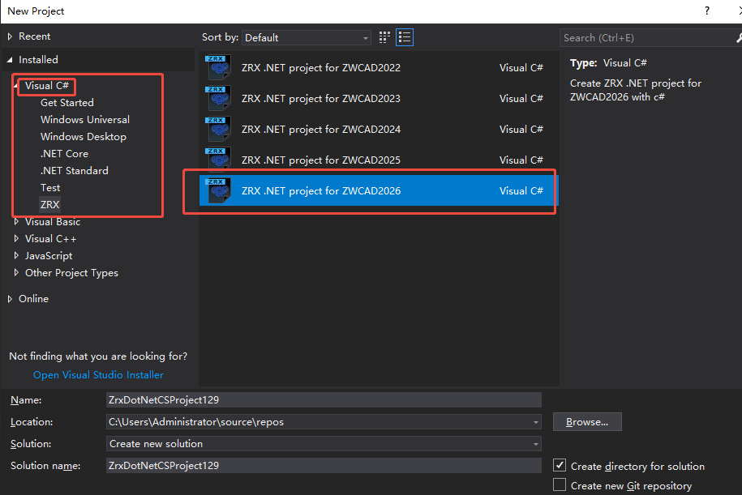
Creating a VB Project
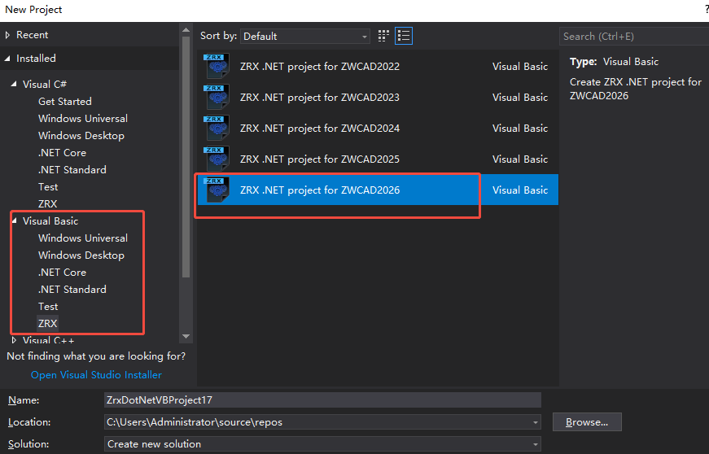
4. Select the installation paths for ZRXSDK and ZWCAD. The default values can usually be used directly.
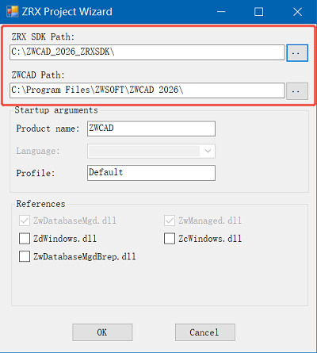
5. Check the required DLL files based on your needs.
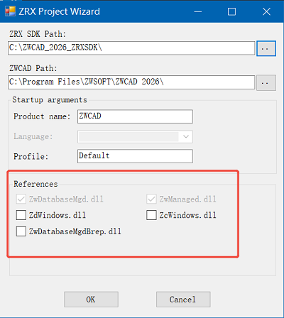
6. Click the "OK" button to create the project.
7. By default, the wizard uses .NET Framework 4.7. If a different version (e.g., 4.7.2) is installed, manually specify the .NET Framework version in the project settings:
From the menu, select [Project]->['Project Name' Properties]

Switch to the [Application] tab and select the installed .NET Framework version under the [Target Framework] option.
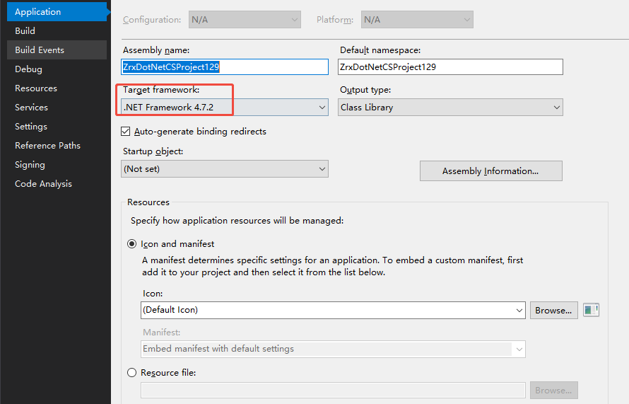
8. From the menu, select [Build]->[Build Solution]. If the build succeeds, the project is ready.
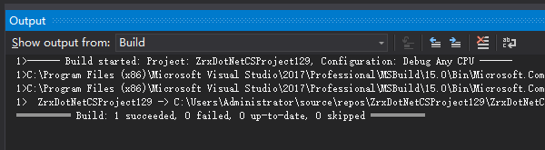
Creating a Class Library Project and Configuring It as a ZWCAD .NET API Development Project
We recommend using the ZWCAD development wizard for convenience. However, if the wizard is unavailable (e.g., using a Visual Studio version other than 2017), you can manually create a class library project and configure it for ZWCAD .NET API development.
Detailed steps (using Visual Studio 2022 as an example):
1. Open Visual Studio 2022
2. On the start page, select [Create a new project]
3. Filter and locate the "Class Library (.NET Framework)" project type.
Creating a C# Project
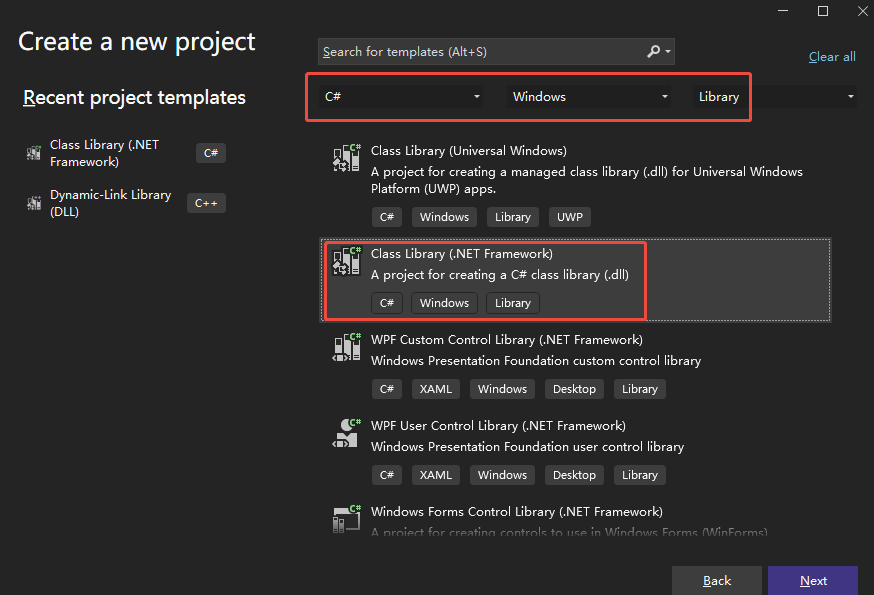
Creating a VB Project
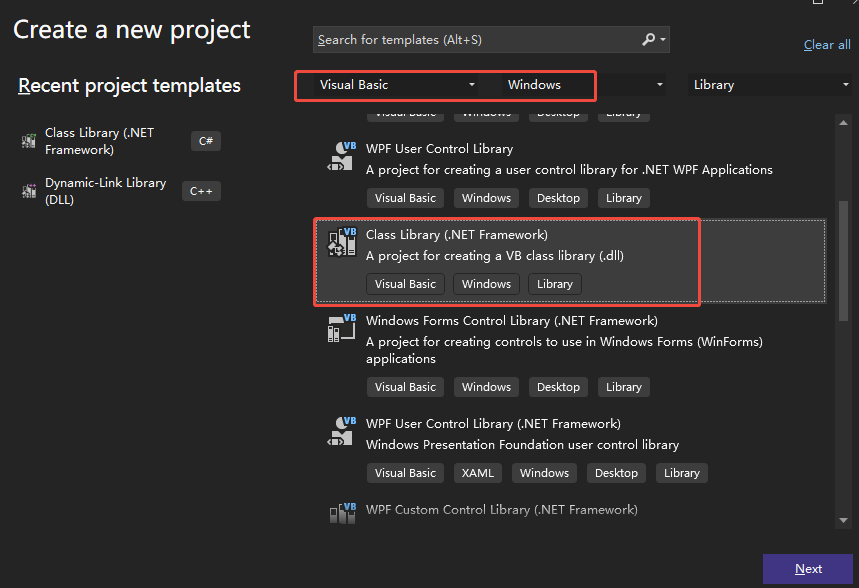
4. Click "Next," specify the project name and path, select .NET Framework 4.7.x, then click "Create."
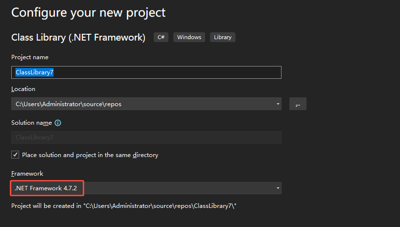
5. In Solution Explorer, right-click [References] and select [Add Reference].
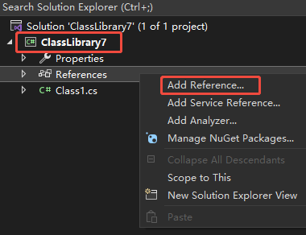
6. In the Reference Manager, select [Browse], click "Browse," navigate to the "inc" folder under the ZRXSDK installation directory, select the required DLL files (at least ZwManaged.dll and ZwDatabaseMgd.dll), click "Add," then confirm the selections and click "OK."
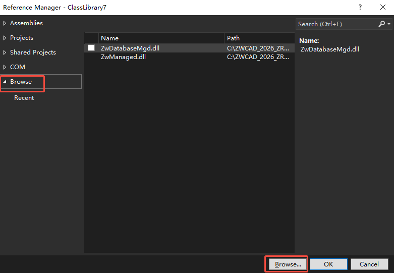
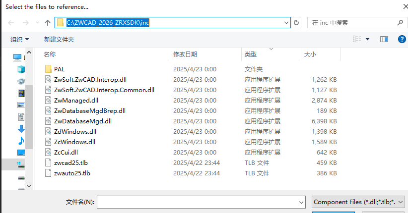
7. Add sample code.
For C# projects, add the following code to Class1.cs:
using System;
using System.Collections.Generic;
using System.Linq;
using System.Text;
using System.Threading.Tasks;
using ZwSoft.ZwCAD.Runtime;
using ZwSoft.ZwCAD.ApplicationServices;
using ZwSoft.ZwCAD.Geometry;
using ZwSoft.ZwCAD.DatabaseServices;
using ZwSoft.ZwCAD.EditorInput;
[assembly: ExtensionApplication(typeof(ZrxDotNetCSProject.PlugInApplication))]
[assembly: CommandClass(typeof(ZrxDotNetCSProject.Commands))]
namespace ZrxDotNetCSProject
{
public class PlugInApplication : IExtensionApplication
{
public void Initialize()
{
// Add your initialize code here.
}
public void Terminate()
{
// Add your uninitialize code here.
}
}
class Commands
{
[CommandMethod("HelloCS")]
static public void HelloCS()
{
Database db = HostApplicationServices.WorkingDatabase;
Document doc = Application.DocumentManager.GetDocument(db);
ZwSoft.ZwCAD.EditorInput.Editor ed = doc.Editor;
ed.WriteMessage("\nHello World!");
}
}
}
For VB projects, add the following code to Class1.vb:
Imports System
Imports ZwSoft.ZwCAD.Runtime
Imports ZwSoft.ZwCAD.ApplicationServices
Imports ZwSoft.ZwCAD.DatabaseServices
Imports ZwSoft.ZwCAD.Geometry
Imports ZwSoft.ZwCAD.EditorInput
<Assembly: ExtensionApplication(GetType(ZrxDotNetVBProject.PluginApplication))>
<Assembly: CommandClass(GetType(ZrxDotNetVBProject.Commands))>
Namespace ZrxDotNetVBProject
Public Class PluginApplication
Implements IExtensionApplication
Public Sub Initialize() Implements IExtensionApplication.Initialize
'Add your initialize code here.
End Sub
Public Sub Terminate() Implements IExtensionApplication.Terminate
'Add your uninitialize code here.
End Sub
End Class
Public Class Commands
<CommandMethod("TestVBGroup", "HelloVB", CommandFlags.Modal)>
Public Sub HelloVB()
Dim db As Database
db = HostApplicationServices.WorkingDatabase
Dim doc As Document
doc = Application.DocumentManager.GetDocument(db)
Dim ed As ZwSoft.ZwCAD.EditorInput.Editor
ed = doc.Editor
ed.WriteMessage("\nHello World!")
End Sub
End Class
End Namespace
8. In the menu, select [Build]->[Build Solution]. If the build is successful, it indicates the project has been created successfully.